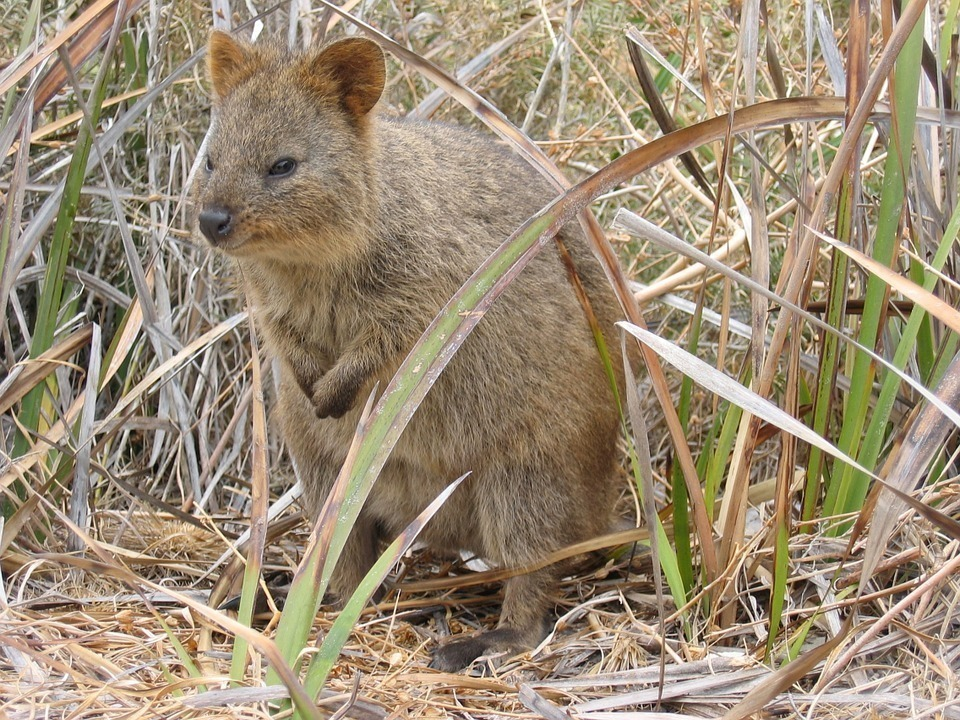
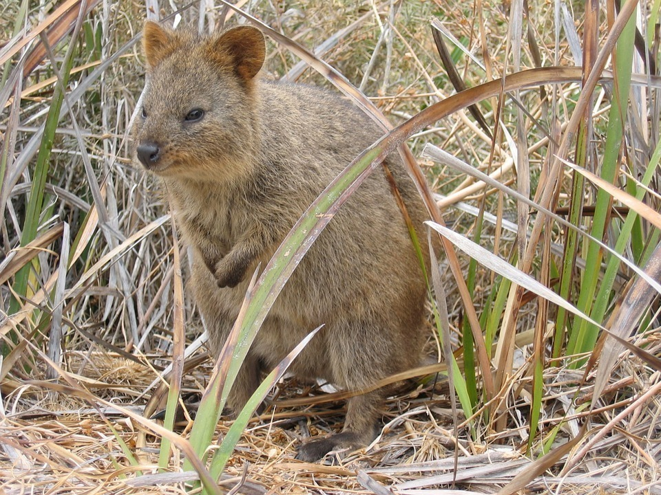

Strelitzia, whose common name is the bird of paradise flower, because of a resemblance of its flowers to birds-of-paradise (Paradisaea raggiana). The species S. nicolai is the largest in the genus, reaching 10m tall, with stately white and blue flowers; the other species typically reach 2-3.5m tall, except S. caudata which is a tree of a typically smaller size than S. nicolai. The leaves are large, 30–200cm long and 10–80cm broad, similar to a banana leaf in appearance but with a longer petiole, and arranged strictly in two ranks to form a fan-like crown of evergreen foliage. The flowers are produced in a horizontal inflorescence emerging from a stout spathe.
Strelitzia, whose common name is the bird of paradise flower, because of a resemblance of its flowers to birds-of-paradise (Paradisaea raggiana). The species S. nicolai is the largest in the genus, reaching 10m tall, with stately white and blue flowers; the other species typically reach 2-3.5m tall, except S. caudata which is a tree of a typically smaller size than S. nicolai. The leaves are large, 30–200cm long and 10–80cm broad, similar to a banana leaf in appearance but with a longer petiole, and arranged strictly in two ranks to form a fan-like crown of evergreen foliage. The flowers are produced in a horizontal inflorescence emerging from a stout spathe.
An iFrame is a little window that you can place on a webpage. It's actually short for inline frame